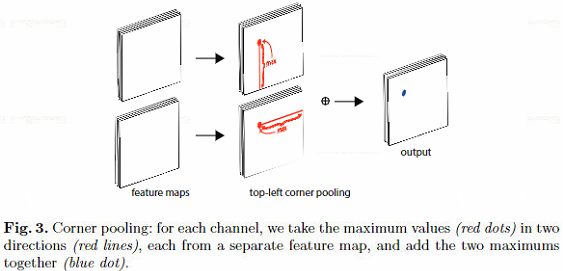

提出的问题
单阶段目标检测大多基于anchor实现，但是用anchor存在两个问题：
- 为了保证所有ground truth都有匹配的anchor，不得不使用非常多的anchor，例如retinanet anchor个数100K, DSSD anchor个数40K，但是真正与ground truth iou较大的anchor非常少，导致了很严重的正负样本不平衡问题。
- 设置anchor时需要非常多的超参数，anchor的大小、长宽比、个数，使得找到合适的anchor设置非常困难
解决思想
丢弃anchor，模型在回归目标位置时，不是去预测基于anchor的偏移量，而是使用两个feature map同时预测两个角点（左上、右下）即可，在feature map上的点，只有为目标角点的时候才进行激活预测其目标类别，只是这里又有三个问题：
- 两个feature map预测出来的角点，如何进行匹配，从而合并成一个目标？
- 目标在两个角点之间，因此feature map上的角点位置缺少关于目标的信息，如何准确的进行分类？
- feature map在经过下采样之后，feature map上的点的位置要映射回原图，这个时候存在位置精度的损失，可能造成预测位置的偏差。
具体做法
针对第一个角点匹配的问题，这里引用了另外一篇论文的方法（《ssociative embedding: End-to-end learning forjoint detection and grouping》，具体我没看），在模型中，两个角点坐标的feature map都会额外预测一个一维的嵌入向量（embedding vector），希望当两个角点匹配时，两个角点位置预测的嵌入向量的距离尽可能接近，否则尽可能远离（这里嵌入向量的想法没看得太懂，可能还要看看原论文才能理解，除此之外计算量貌似有点大），因此定义了两个loss如下所示，其中$e_{t_k}$代表第k个目标左上角点的嵌入向量，$e_{b_k}$代表第k个目标右下角点的嵌入向量，$e_k = \frac{(e_{t_k} + e_{b_k})}{2}$，N代表目标的个数，$\Delta$在论文的所有实验中均为1。
针对第二个角点处没有目标信息的问题，论文中提出了Corner Pooling，如下图所示，在左上角角点预测过程中，进行pooling时，每个点水平向右和垂直向下搜索，找到最大的值，之后加起来作为这个点pooling之后的值，这样给出了当前点是否是角点的判断信息，并且引入了一个非常强的先验：一个点是否是左上角点，需要看其右边的信息和下面的信息来判断。而如果是在预测右下角点，那么Corner Pooling变为每个点水平向左和垂直向上搜索。

这里为了加快Corner Pooling的计算，如果是左上角点的Corner Pooling，可以从右下点开始计算，计算方式如下，$t_{ij}$和$l_{ij}$分别代表水平向右搜索和垂直向下搜索的结果，最终pooling结果$p_{ij} = t_{ij} + l_{ij}$。
针对第三个问题，在模型中还预测两组偏移量，分别对左上角点和右下角点进行偏移，对于一组偏移量，其目标$o_k$计算如下，并使用SmoothL1Loss进行训练。
最后要说的就是ground truth匹配问题，一个geound truth只匹配一个左上角点和一个右下角点，其余点都为负样本，但在训练时，在正样本周围画一个半径为$r$的圈，这里有个约束：半径$r$范围内的点，要保证可以和ground truth生成iou大于0.7的检测框，从而决定$r$的大小。
这个圈中除中心点之外，其余点在计算loss时，会降低其loss权重，作者定义了一个focal loss的变种，作为每个点的分类损失函数，如下所示，其中$C、H、W$分别表示类别数、图片高度、图片宽度，N表示图片上目标个数，$p_{cij}$表示位置$ij$处的$c$类预测概率，在论文所有实验中，$\alpha = 2$，$\beta = 4$，$y_{cij}$不是纯粹的标签，还编码了刚才说的loss函数权重信息，对于正样本点，$y_{cij} = 1$，对于正样本周围半径为$r$的圈内的点，$y_{cij} = 1 - e^{-\frac{x^2+y^2}{\sigma}}$(这里的$xy$是相对于中心点的坐标)，其中$\sigma = \frac{r}{3}$，而对于其余负样本点，$y_{cij} = 0$。
存在的问题
个人觉得这个模型的计算可能非常慢，首先是嵌入向量的匹配过程，我没有想到比较好的实现方式，暴力匹配的话应该非常慢，还有一个问题是Corner Pooling的计算，这里如果需要按顺序计算，那么GPU并行加速提升不大。